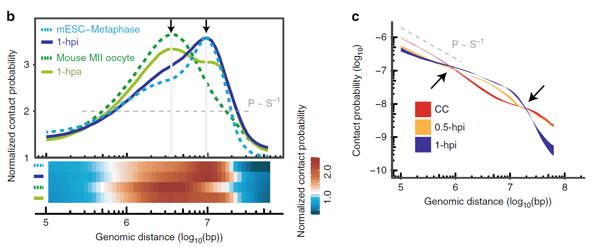
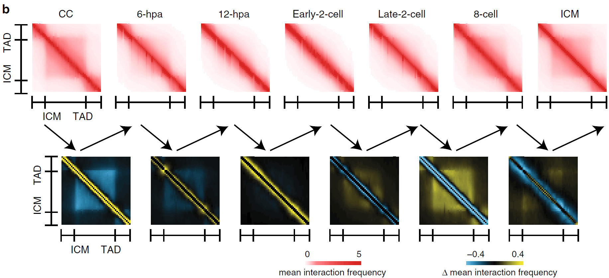
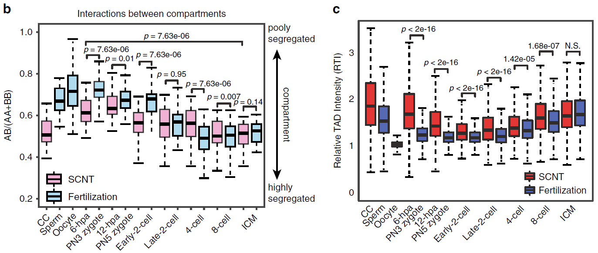
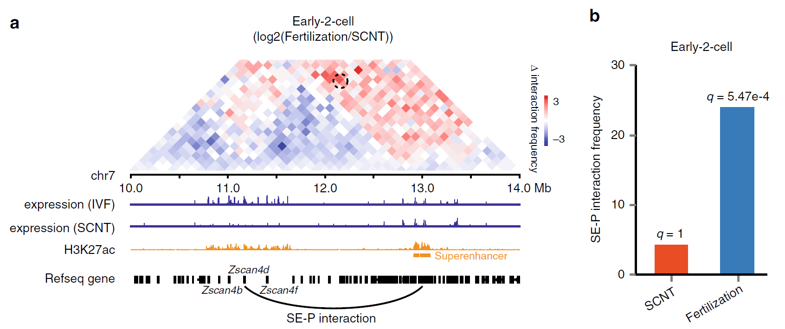
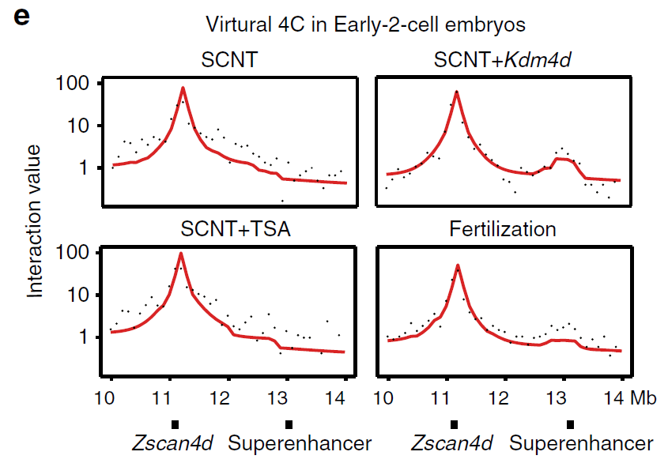
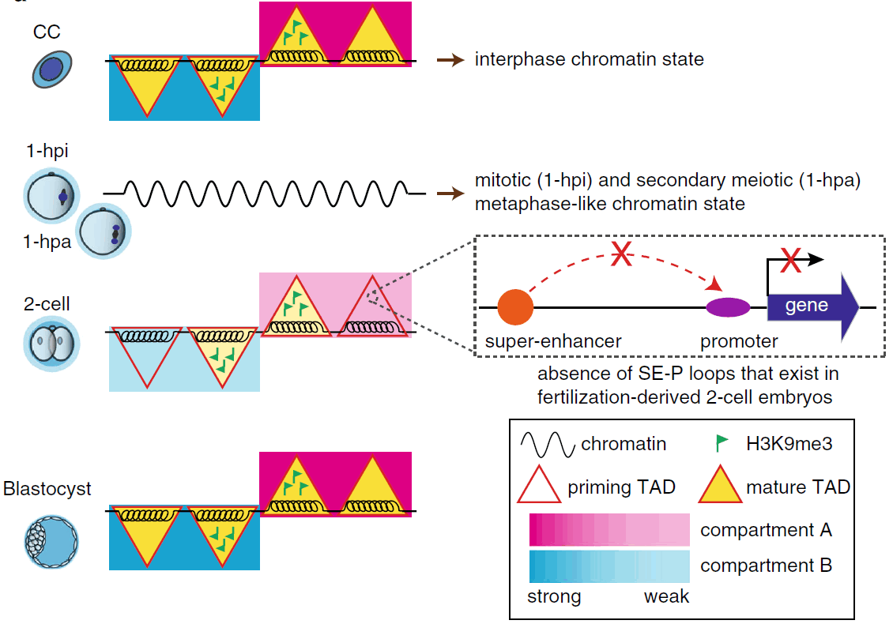

小鼠体细胞核移植过程中染色质高级结构重编程模式及分子机制
Chromatin architecture reorganization in murine somatic cell nuclear transfer embryos

2020年4月14日，同济大学生命科学与技术学院高绍荣团队与江赐忠团队在《Nature Communications》 杂志在线发表了题为“Chromatin architecture reorganization in murine somatic cell nuclear transfer embryos”的研究成果。他们采用了经过优化的少量细胞全基因组染色质构象捕获技术（sisHi-C），对小鼠SCNT胚胎发育过程进行连续采样，并详细描绘了SCNT植入前胚胎染色质高级结构的动态变化过程。
体细胞核移植（SCNT）技术是将已经分化的体细胞移入去核卵母细胞内，使体细胞的染色质发生重编程，继而重启胚胎发育过程并获得完整个体的技术。虽然SCNT是目前为止唯一一种可以使体细胞获得完整全能性的手段，但是由于在重编程过程中出现了各种表观遗传水平修饰的异常，使得SCNT胚胎的发育能力处于较低水平，也极大程度地限制了该项技术的应用前景。高绍荣教授团队长期致力于小鼠SCNT胚胎发育异常原因的探索。2016年通过对早期克隆胚胎进行卵裂球活检，并结合单细胞RNA测序技术首次建立了植入前核移植胚胎发育命运追踪系统，发现了组蛋白去甲基化酶Kdm4b和Kdm5b分别对克隆胚胎2-细胞和4-细胞时期的发育阻滞起到关键作用。两年后，又通过对不同发育命运体细胞克隆胚胎进行全基因组DNA甲基化高通量测序分析，详细地研究了小鼠克隆胚胎着床前发育过程中DNA甲基化修饰的重编程过程，并揭示了异常的DNA再甲基化（DNA re-methylation）是导致克隆胚胎着床后发育异常的关键因素。在哺乳动物中，染色质三维结构对基因的调控起着非常重要的作用。但是，受制于小鼠SCNT胚胎样本取材困难和Hi-C技术对细胞样本起始量高的限制，小鼠SCNT植入前胚胎发育过程中染色质三维结构的动态变化过程尚未被全面研究过。
在本研究中，研究人员收集了核移植后多个时间点的胚胎并利用优化的微量细胞sisHi-C技术对染色质高级结构进行了检测，通过数据分析发现，在体细胞核被注射到去核的卵细胞后，随着典型三维染色质结构的消解，供核体细胞染色质的近距离相互作用优先解开，并迅速由间期转化为类中期状态。在这期间出现了一个非常有趣的现象，当供体细胞在去核卵母细胞中被人工激活1个小时后，基因组经历了从类有丝分裂中期向类第二次减数分裂中期的转变（图1）。
在SCNT胚胎发育6小时进入类原核期（对应正常受精胚胎PN3时期）后，重新出现了较弱的区室结构和拓扑相关结构域（TADs）信号，这很可能是再次退出中期的结果。随后，TADs信号在一细胞晚期逐渐减弱，直到2细胞早期降到最低值，在2细胞晚期到8细胞卵裂期逐步重新建立，直到囊胚期成熟（图2）。
 随后研究人员将小鼠SCNT与正常受精胚胎发育sisHi-C公共数据集进行比较分析后发现，SCNT胚胎在2细胞期的远距离（>2 Mb）相互作用较正常受精胚胎明显降低。同时，早期（2到8细胞期）受精胚胎与SCNT胚胎的区室结构及TADs也存在着明显的差异。
前期的很多研究表面小鼠SCNT胚胎在合子基因组激活（ZGA）时期有大量的基因未能被正常激活。于是，研究人员想到染色质空间结构的异常是否会导致增强子与启动子之间的相互作用无法成功建立？结果表明，在小鼠正常受精卵的ZGA时期的关键基因Zscan4d的启动子与上游的超级增强子有着强烈的相互作用，而这种互作却无法在SCNT胚胎中被观察到（图3）。这类基因的激活异常很可能就是SCNT胚胎发育能力低下的原因之一。那么，造成染色质高级结构的异常的原因究竟是什么呢？研究人员证实这是由于供体细胞基因组中持续存在的组蛋白H3K9me3修饰无法被正常擦除造成的。通过在SCNT胚胎中过量表达组蛋白去甲基化酶Kdm4d来降低H3K9me3修饰水平， SCNT胚胎的染色质空间构象会趋向正常受精胚胎，且Zscan4d的启动子与超级增强子的互作也得到了部分的修复（图3）。这说明H3K9me3修饰是核移植胚胎中染色质高级结构重编程的重要障碍，也证实了在胚胎基因表达调控过程中组蛋白修饰和染色质高级结构的协同作用。
 综上，这项研究对小鼠SCNT胚胎发育过程中的染色质三维结构重塑进行了系统的研究，这也为今后进一步纠正SCNT胚胎发育过程中的表观遗传屏障提供了新的思路。
同济大学生命科学与技术学院博士研究生陈墨、朱乾书和李翀副研究员为本文共同第一作者，高绍荣教授、江赐忠教授和刘晓雨研究员为本文共同通讯作者。该研究得到了科技部、基金委和上海市科委项目的支持。